|
Roda JC - Vitesse (0-2) 4 maart 2002 |
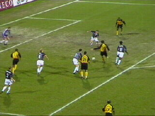
Kans.
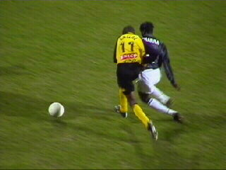
Lawal in duel met Diarra.
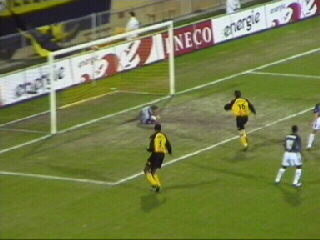
Kans.
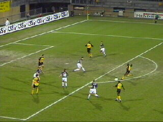
Kans.
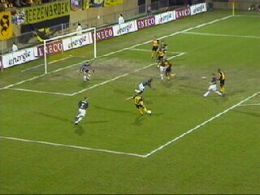
Kans.
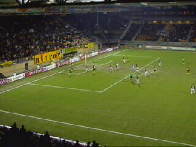
Kans.
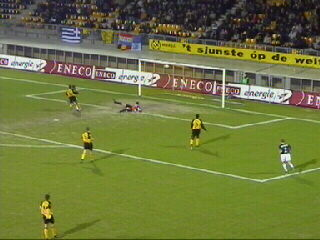
Goal Mbamba (42).
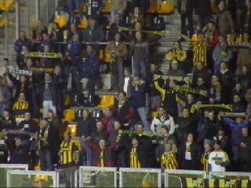
Toch nog 200 blijen in het PLS.
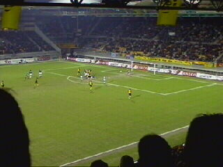
Kans.
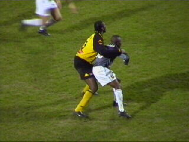
Vrede dekt Amoah (excusez le mot).
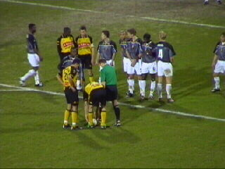
Kans.
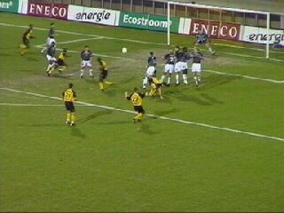
De vrije trap van Luijpers gaat helaas op de lat.
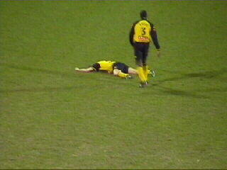
Luijpers heeft een klap van Mbamba gekregen.
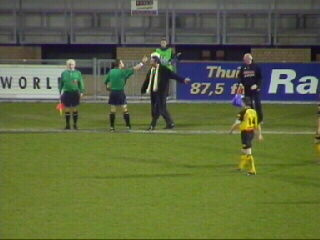
Leekens heeft het gezien. Arbiter Schenkels
raadpleegt de grensrechter.
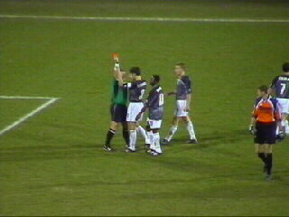
Die heeft het ook gezien waarna Mbamba de
rode kaart krijgt.
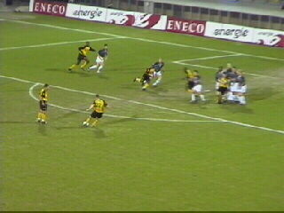
Kans.
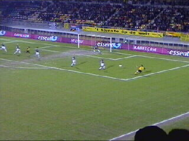
Kans.
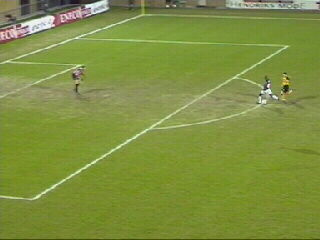
Amoah countert 0-2 (79).
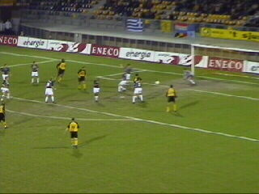
Kans.
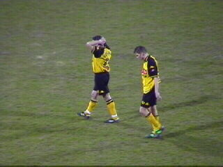
Een teleurstellend resultaat zorgt voor een fikse
kater. Roda komt nadrukkelijk in de gevarenzone
en maakt een reële kans op nacompetitie.
Luijpers en Sonkaya lopen vertwijfeld naar de
supporters voor een bedankje.
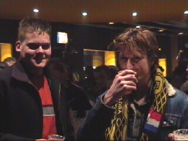
Robbie nam zijn broertje mee.
Hier lacht Marc weer. Hij was de enige speler
die de weg naar het supportershome vond!
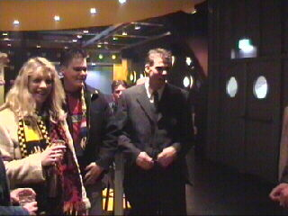
Het home was tegen 00.00 uur vrijwel verlaten.
©KPD